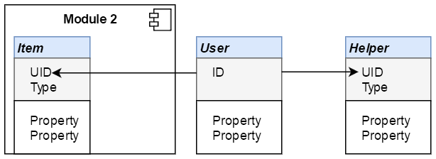
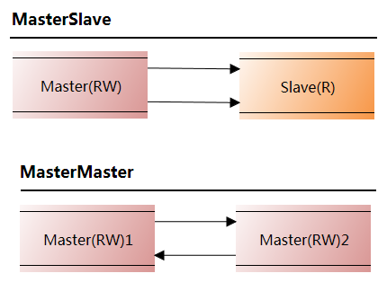
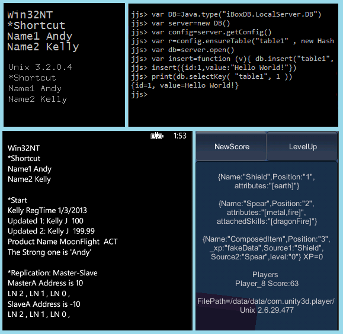

Project Description
iBoxDB is a fast transactional table style document NoSQL Application Database, easily store, process objects and documents, traditional table with unstructured data, zero configuration, pure JAVA and DotNET engines, no dependencies.
iBoxDB has a well designed interface with great performance and capability for agile development. You can create applications with database services embedded and deploy it on mobiles, desktops, servers, to persist your data from anywhere.
Green, low carbon emission!
Dual Core Application Database
For JAVA C# Android Unity Xamarin Mono Linux Windows
Features
- CRUD and Forward CRUD
- KeyValue and KeyOnly tables
- Unique and non-unique indexes
- Unique and non-unique composite indexes
- SQL like query language
- Transactions support
- Concurrency control, thread safe
- Multiple applications supported
- Memory management
- Scalable hot MasterMaster and MasterSlave replications
- On disk and in memory databases supported
- Automatically create databases
- Zero configuration, copy and run, purely managed code
- Dynamic columns
- Different types with different indexes can be stored in same table
- Persistence + ORM + Cache + Embeddable, ONE STOP solution
- Ason, Array Script Object Notation
- ResultSet compatible with LINQ
- High performance, no dependencies
- Update Increment
- Selecting Tracer
- Snapshot-Serializable Isolation
- JAVA6+ .NET2+
Examples
Each box is an ISOLATED data space (transaction-based)
using(var box = auto.Cube())
{
//select, insert, update, delete ...
CommitResult cr = box.Commit();
}
try(Box box = auto.cube()){
...
CommitResult cr = box.commit();
} Normal Object
Member m = new Member();
m.Id = box.NewId();
m.Name = "Andy";
m.Password = EncodePassowrd("123");
box["Member"].Insert(m);
Member m = new Member();
m.Id = box.newId();
m.setName("Kevin");
box.d("Member").insert(m); Dynamic Object (document database)
//Game : Dictionary<string, object>
game["GameType"] = "ACT";
box["Product"].Insert(game);
//Game extends HashMap<String,Object>
game.put("GameType", "ACT");
box.d("Product").insert(game); Key Value Style Query
box["Table", 2L].Select<Member>();
//Composite Key
box["Table2", 99, "ABC"].Select<Product>();
box.d("Table", 3L).select(Member.class);
//Composite Key
box.d("Table2", 88, "ABC").select(Product.class); SQL Like
/*
from TABLE where A>? & B<=? order by C limit 0,10
from [table] where [condition]
order by [field1] desc,[field2] limit [0,10]
[Condition:] == != < <= > >= & | ( )
*/ box.Select<Member>("from Member where Name==?", "MyName"); box.select(Member.class, "from Member where Name==?", "MyName"); Query
//query
box.Select("from Member");
//load to memory first, startswith '*'
box.Select("*from Member");
//selecting tracer, startswith '!'
box.Select("!from Member") Index, make Select hundred times faster in average
config.EnsureIndex<Member>("Member", "Field1","Field2")
config.ensureIndex(Member.class, "Member", isUnique,"Field1","Field2")
box.Select("from Member where Field1 == ? & Field2 == ?",arg1,arg2)Custom QueryFunction
box.Select<Member>("from Member where [Tags]", new IFunction("Value"))Compatible with LINQ (.NET)
from o in box.Select<Member>("from Member")
where o.Text.Contains(text) select o;Compatible with Stream (Java)
StreamSupport
.stream(box.select(Member.class,"from Member").spliterator(), true)
.collect(groupingBy(m -> m.group, summarizingLong(m -> m.value)))Snapshot-Serializable Transaction
| Transaction Step | Isolation Level |
|
|---|---|---|
| Application Point | Snapshot | |
| Database Point | Serializable |
Update Increment
| Apply To | Trigger | Type | Value From | |
|---|---|---|---|---|
| UpdateIncrement | non-primary key | insert/update | long | Database NewId(MaxPos,1) |
| AutoIncrement | primary key | insert | number | Table Max(ID)+1 |
| Generator Time | ||||
| UpdateIncrement | Transaction Commit | |||
| AutoIncrement | Data Insert, Differed from Commit order | |||
Selecting Tracer
| Thread | Usage | |
|---|---|---|
| Tracer | non-blocked | read/write different records |
| Locker | blocked | read/write same record |
IO
| .NET | JAVA |
|---|---|
|
|
Database Path
C# & JAVA, place outside IDE working directory can get better performanceiBoxDB.LocalServer.DB.Root("/data/"); iBoxDB.LocalServer.DB.Root(MapPath("~/App_Data/"));iBoxDB.LocalServer.DB.Root(System.Environment.GetFolderPath(
System.Environment.SpecialFolder.Personal));iBoxDB.LocalServer.DB.Root(Application.persistentDataPath);iBoxDB.LocalServer.DB.root(android.os.Environment.getDataDirectory()
.getAbsolutePath() + "/data/" + packageName + "/"); @WebListener()
public class StartListener implements ServletContextListener {
@Override
public void contextInitialized(ServletContextEvent sce) {
String path = System.getProperty("user.home") + "/data/";
new File(path).mkdirs();
iBoxDB.LocalServer.DB.root(path);
}
} Getting Started C# and Java
using iBoxDB.LocalServer;
var db = new DB();
db.GetConfig().EnsureTable<Record>("Table", "Id");
AutoBox auto = db.Open();
auto.Insert("Table", new Record { Id = 1L, Name = "Andy" });
var o1 = auto.Get<Record>("Table", 1L);
o1.Name = "Kelly";
auto.Update("Table", o1);
auto.Delete("Table", 1L); import iBoxDB.LocalServer.*;
DB db = new DB();
db.getConfig().ensureTable(Record.class, "Table", "Id");
AutoBox auto = db.open();
auto.insert("Table", new Record(1L, "Andy"));
Record o1 = auto.get(Record.class, "Table", 1L);
o1.Name = "Kelly";
auto.update("Table", o1);
auto.delete("Table", 1L); Install
.NET: Add NETDB/iBoxDB.DLL to ProjectJava: Add JavaDB/iBoxDB.jar to ProjectBenchmark with MySQL
iBoxDB
Insert: 1,000,000 AVG: 47,016 objects/s
Update: 1,000,000 AVG: 25,558 objects/s
Delete: 1,000,000 AVG: 42,714 objects/s
MySQL
Insert: 1,000,000 AVG: 5,514 objects/s
Update: 1,000,000 AVG: 5,109 objects/s
Delete: 1,000,000 AVG: 6,044 objects/s
Supported Types
| .NET | JAVA |
|---|---|
|
|
Composite Key Supported
config.ensureTable(Item.class, "Item", "UID", "Type")Replication Master-Slave , Master-Master
